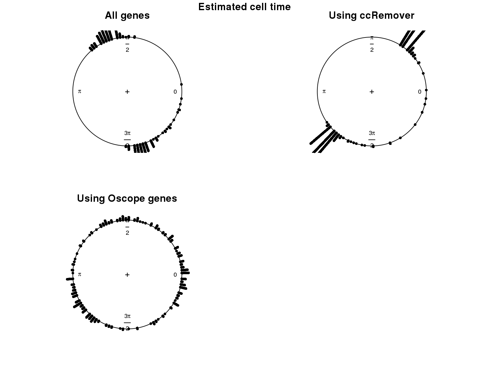
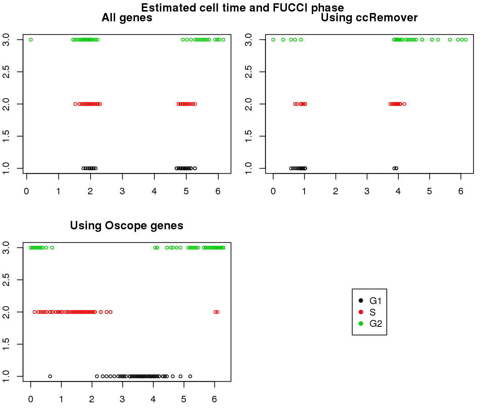
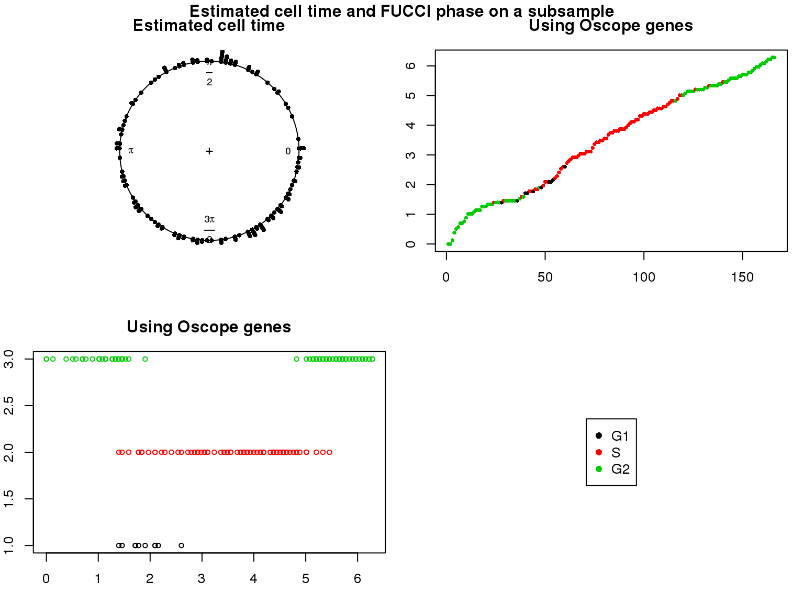

Last updated: 2018-02-09
Code version: 5845152
Overview/Results
Goal: Evalute the performance on cellcycleR on RNA-seq data
Method: Apply cellcycleR to Leng et al. 2015 data. Run each model three times on different random seeds. The number of discrete time intervals is fixed to be 100 between 0 to \(2\pi\).
Data: We normalize the expression counts by library size and convert the expression counts to log2CPM.
Results:
1. Cell time estimates: Should span 0 to 2pi give that the samples collected including somewhat similar number of cells from each phase. This was observed for results using Oscope genes (29) but not for results using all genes or cell cycle annotated genes.
2. Cell order: We exepct that at least the ordering of cells by cell time should match with the fucci-labeled cell cycle phases. This was the case for results using Oscope genes (29) but not for results using all genes or cell cycle annotated genes.
Additional analysis 1: I was thinking that perhaps cellcycleR doesn’t perform well when the number of cells in the different phases is uneven. And this could explain the poor performance on the fucci data. Or from the method perspective, it could be that the model doesn’t accommodate skewed/distored oscillation patterns in the data. I then created a dataset from the Leng data where there’s only 10 cells in G1. Results show that (at the end of this page) most G1 cells are estimated to be similar to G2 cells according to the estimated cell ordering…
Additional analysis 2: I examined the cellcycleR fit on the whole set of Leng data gene. I found that the ones with low signal-to-noise ratio range from genes with high variance-mean dependency to low variance-mean dependency.
Data and packages
Packages
library(Biobase)
library(ggplot2)
library(cowplot)
library(data.table)
library(tidyr)
library(gplots)
library(cellcycleR)
library(VennDiagram)
library(ccRemover)
library(scales)
library(circular)
library(limma)
Leng et al. data
HumanLengESC <- readRDS(file = "../data/rnaseq-previous-studies/HumanLengESC.rds")
#select fucci-expression cells
counts_leng <- exprs(HumanLengESC)[,pData(HumanLengESC)$cell_state != "H1"]
libsize_leng <- colSums(counts_leng)
pdata_leng <- pData(HumanLengESC)[pData(HumanLengESC)$cell_state != "H1", ]
cpm_leng <- (t(t(counts_leng)*(10^6)/libsize_leng))[,pdata_leng$cell_state != "H1"]
log2cpm_leng <- (log2(cpm_leng+1))[,pdata_leng$cell_state != "H1"]
pdata_leng$cell_state <- droplevels(pdata_leng$cell_state)
table(pdata_leng$cell_state)
G1 G2 S
91 76 80
## filter genes
genes_to_include <- which(rowMeans(cpm_leng)>1)
log2cpm_leng <- log2cpm_leng[genes_to_include,]
## subset to include genes that are annotated as cell cycle genes (according to ccRemover)
ccremover <- readRDS("../data/cellcycle-genes-previous-studies/rds/macosko-2015.rds")
which_ccremover <- gene_indexer(rownames(log2cpm_leng), species="human", name_type="symbol")
log2cpm_leng_ccremover <- log2cpm_leng[which_ccremover, ]
cpm_leng_ccremover <- cpm_leng[which_ccremover, ]
counts_leng_ccremover <- counts_leng[which_ccremover, ]
## use Oscope 29 genes
oscope <- readRDS("../data/cellcycle-genes-previous-studies/rds/leng-2015.rds")
log2cpm_leng_oscope <- log2cpm_leng[which(rownames(log2cpm_leng) %in% unique(oscope$hgnc)),]
counts_leng_oscope <- counts_leng[which(rownames(counts_leng) %in% unique(oscope$hgnc)),]
## standardize log2cpm for fitting cellcycleR
log2cpm_leng_oscope_z <- t(apply(log2cpm_leng_oscope, 1, scale))
colnames(log2cpm_leng_oscope_z) <- colnames(log2cpm_leng_oscope)
log2cpm_leng_ccremover_z <- t(apply(log2cpm_leng_ccremover, 1, scale))
colnames(log2cpm_leng_ccremover_z) <- colnames(log2cpm_leng_ccremover)
log2cpm_leng_z <- t(apply(log2cpm_leng, 1, scale))
colnames(log2cpm_leng_z) <- colnames(log2cpm_leng)
compare the sets
Main analysis
Fitting cellcycleR using the same 3 random seeds for each analysis.
seeds <- c(101,231,456)
fit_leng_list <- vector("list", length(seeds))
fit_leng_ccremover_list <- vector("list", length(seeds))
fit_leng_oscope_list <- vector("list", length(seeds))
for (i in 1:length(seeds)) {
set.seed(seeds[i])
fit_leng_list[[i]] <- sin_cell_ordering_class(t(log2cpm_leng_z),
celltime_levels=100,
num_shuffle=1, maxiter=300, tol=1e-6,
fix.phase = FALSE, phase_in=NULL,
n_cores=8)
set.seed(seeds[i])
fit_leng_ccremover_list[[i]] <- sin_cell_ordering_class(t(log2cpm_leng_ccremover_z),
celltime_levels=100,
num_shuffle=1, maxiter=300, tol=1e-6,
fix.phase = FALSE, phase_in=NULL,
n_cores=8)
set.seed(seeds[i])
fit_leng_oscope_list[[i]] <- sin_cell_ordering_class(t(log2cpm_leng_oscope_z),
celltime_levels=100,
num_shuffle=1, maxiter=300, tol=1e-6,
fix.phase = FALSE, phase_in=NULL,
n_cores=8)
}
saveRDS(fit_leng_list, "../output/cellcycler-seqdata-leng.Rmd/fit_leng.rds")
saveRDS(fit_leng_ccremover_list, "../output/cellcycler-seqdata-leng.Rmd/fit_leng_ccremover.rds")
saveRDS(fit_leng_oscope_list, "../output/cellcycler-seqdata-leng.Rmd/fit_leng_oscope.rds")
Load previously computed results.
fit_leng_list <- readRDS("../output/cellcycler-seqdata-leng.Rmd/fit_leng.rds")
fit_leng_ccremover_list <- readRDS("../output/cellcycler-seqdata-leng.Rmd/fit_leng_ccremover.rds")
fit_leng_oscope_list <- readRDS("../output/cellcycler-seqdata-leng.Rmd/fit_leng_oscope.rds")
fit_leng <- fit_leng_list[[which.max(sapply(fit_leng_list, "[[", "loglik"))]]
fit_leng_ccremover <- fit_leng_ccremover_list[[which.max(sapply(fit_leng_ccremover_list, "[[", "loglik"))]]
fit_leng_oscope <- fit_leng_oscope_list[[which.max(sapply(fit_leng_oscope_list, "[[", "loglik"))]]
Results
Distribution of cell times

Estimated cell time and FUCCI labels
Estimated cell time and sorted phase

Results on the same data. Visualize on circular plot.

gene profiles
Subsampling
Goal: To test the fit of cellcycleR on dataset with small proportion of G1 cells.
Method: Here I am using the Oscope genes to see if cellcycleR still performs well with a small dataset.
seeds <- c(101,231,456)
fit_leng_oscope_short_list <- vector("list", length(seeds))
pdata_leng$cell_state <- as.character(pdata_leng$cell_state)
g1_cells <- which(as.character(pdata_leng$cell_state) == "G1")
which_subsample <- g1_cells[sample(length(g1_cells), 81)]
log2cpm_leng_oscope_short <- log2cpm_leng_oscope[,-which_subsample]
pdata_leng_short <- pdata_leng[-which_subsample,]
log2cpm_leng_oscope_short_z <- t(apply(log2cpm_leng_oscope_short, 1, scale))
colnames(log2cpm_leng_oscope_short_z) <- colnames(log2cpm_leng_oscope_short)
for (i in 1:length(seeds)) {
set.seed(seeds[i])
fit_leng_oscope_short_list[[i]] <- sin_cell_ordering_class(t(log2cpm_leng_oscope_short_z),
celltime_levels=100,
num_shuffle=1, maxiter=300, tol=1e-6,
fix.phase = FALSE, phase_in=NULL,
n_cores=8)
}
saveRDS(fit_leng_oscope_short_list, "../output/cellcycler-seqdata-leng.Rmd/fit_leng_oscope_short.rds")
saveRDS(pdata_leng_short, "../output/cellcycler-seqdata-leng.Rmd/pdata_leng_short.rds")
Load previously computed results.
fit_leng_oscope_short_list <- readRDS("../output/cellcycler-seqdata-leng.Rmd/fit_leng_oscope_short.rds")
pdata_leng_short <- readRDS("../output/cellcycler-seqdata-leng.Rmd/pdata_leng_short.rds")
fit_leng_oscope_short <- fit_leng_oscope_short_list[[which.max(sapply(fit_leng_oscope_short_list, "[[", "loglik"))]]
Results

Results on the same data. Visualize on circular plot.
Overdispersion
Let’s see if genes with high SNR are also those with high overdispersion. Use voom because we are interested in log based models.
par(mfrow=c(1,2))
leng_voom <- voom(counts_leng, lib.size=libsize_leng, normalize.method = "none",
save.plot = TRUE)
genes_voom <- which(rownames(counts_leng) %in% names(leng_voom$voom.xy$x))
snr <- with(fit_leng, (amp[genes_voom]^2)/(sigma[genes_voom]^2))
plot(leng_voom$voom.xy$x, leng_voom$voom.xy$y, pch=16, cex=.5, col = "gray60",
xlab = "log2(count sizse + .5", ylab="Sqrt(standard deviation)",
main = "All genes")
lines(leng_voom$voom.line, col="red")
points(cbind(leng_voom$voom.xy$x,leng_voom$voom.xy$y)[order(snr, decreasing=F)[1:50],],
pch=1, col="blue")
leng_voom <- voom(counts_leng_ccremover, lib.size=libsize_leng, normalize.method = "none",
save.plot = TRUE)
genes_voom <- which(rownames(counts_leng_ccremover) %in% names(leng_voom$voom.xy$x))
snr <- with(fit_leng_ccremover, (amp[genes_voom]^2)/(sigma[genes_voom]^2))
plot(leng_voom$voom.xy$x, leng_voom$voom.xy$y, pch=16, cex=.5, col = "gray60",
xlab = "log2(count sizse + .5", ylab="Sqrt(standard deviation)",
main = "All genes")
lines(leng_voom$voom.line, col="red")
points(cbind(leng_voom$voom.xy$x,leng_voom$voom.xy$y)[order(snr, decreasing=F)[1:50],],
pch=1, col="blue")
This R Markdown site was created with workflowr